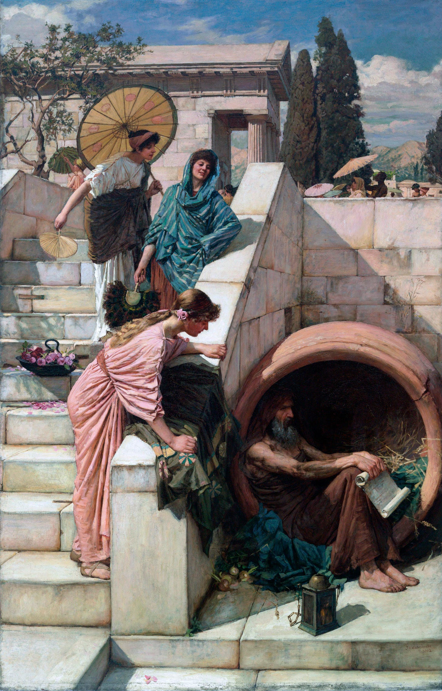

Conversation between Alexander and Diogenes in Sanskrit Verse
I'd want to be Diogenes too!
Introduction
Diogenes the Cynic (Διογένης ὁ Κυνικός) seems to be the Internet’s favorite philosopher. He lived around the fifth and fourth centuries BCE with a simple lifestyle, forgoing all pleasures and living, as the name given to him suggests, like a dog. No work ascribed to him survive though they did exist in antiquity. Most of the amusing anecdotes that are circulated about him today are from Diogenes (no relation) Laertius’ Lives of Eminent Philosophers. This work was written around the third century CE. Due to such gap of time, it is unclear whether the anecdotes are historically accurate or are the sort of tall tales that are often attributed to such figures.
In any case, they are what we have to go with and much of Diogenes’ modern fame is based on these anecdotes. They are, I must admit, quite funny. Plato, for example, is once said to have defined a human as a featherless biped when Diogenes barged into his Academy with a chicken that had all its feathers plucked and proclaimed,“Behold a man !”. He is once said to have remarked that there was no place in a rich man’s house to spit but for his face.
There are a lot of these amusing anecdotes about Diogenes. The most famous one, after the Platonic man incident, was perhaps his meeting with Alexander the Great. It is usually related like this: When Alexander was sometime at Athens for reasons of his own, he went to Diogenes living in his customary jar and asked whether Diogenes would want something from him. “You stand before me. Move out and give me light.” Impressed by such haughty reply, Alexander says, “Were I not Alexander I would like to be Diogenes.” Diogenes replied, “Even if were I Alexander, I would like to be Diogenes too.”
Ancient Sources
The elements of this anecdote are present in Laertius’ account of Diogenes but they aren’t actually connected together but are separate.
φωνήσας ποτέ, “ἰὼ ἄνθρωποι,” καὶ συνελθόντων, καθίκετο τῇ βακτηρίᾳ, εἰπών, “ἀνθρώπους ἐκάλεσα, οὐ καθάρματα,” ὥς φησιν Ἑκάτων ἐν τῷ πρώτῳ τῶν Χρειῶν. φασὶ δὲ καὶ Ἀλέξανδρον εἰπεῖν ὡς εἴπερ Ἀλέξανδρος μὴ ἐγεγόνειν, ἠθέλησα ἂν Διογένης γενέσθαι.
Once he said, “O men !” and when some people came, he hit them with a rod saying, “I called for men not rascals.” So says Hecato in the first book of his Anecdotes. He also says that Alexander once remarked that if he hadn’t been born Alexander, he would want to be born as Diogenes
Lives of Eminent Philosophers VI.32
and later:
ἐν τῷ Κρανείῳ ἡλιουμένῳ αὐτῷ Ἀλέξανδρος ἐπιστάς φησιν, “αἴτησόν με ὃ θέλεις.” καὶ ὅς, “ἀποσκότησόν μου,” φησί.
When he was sunbathing at Craneium, Alexander stood before him and said, “Ask of me what you wish.” He replied, “Unshadow me.”
Lives of Eminent Philosophers VI.39
Here, the shadow incident and the wish of Alexander to be Diogenes are separated. The combination of these two incidents, as often happens in modern depictions of Diogenes, is present not in Laertius but in Plutarch’s Life of Alexander.
εἰς δὲ τὸν Ἰσθμὸν τῶν Ἑλλήνων συλλεγέντων καὶ ψηφισαμένων ἐπὶ Πέρσας μετ᾽ Ἀλεξάνδρου στρατεύειν ἡγεμὼν ἀνηγορεύθη. πολλῶν δὲ καὶ πολιτικῶν ἀνδρῶν καὶ φιλοσόφων ἀπηντηκότων αὐτῷ καὶ συνηδομένων, ἤλπιζε καὶ Διογένην τὸν Σινωπέα ταὐτὸ ποιήσειν, διατρίβοντα περὶ Κόρινθον. [2] ὡς δὲ ἐκεῖνος ἐλάχιστον Ἀλεξάνδρου λόγον ἔχων ἐν τῷ Κρανείῳ σχολὴν ἦγεν, αὐτὸς ἐπορεύετο πρὸς αὐτόν ἔτυχε δὲ κατακείμενος ἐν ἡλίῳ. καὶ μικρὸν μὲν ἀνεκάθισεν, ἀνθρώπων τοσούτων ἐπερχομένων, καὶ διέβλεψεν εἰς τὸν Ἀλέξανδρον. ὡς δὲ ἐκεῖνος ἀσπασάμενος καὶ προσειπὼν αὐτόν ἠρώτησεν εἴ τινος τυγχάνει δεόμενος, [3] ‘μικρὸν’ εἶπεν, ‘ἀπὸ τοῦ ἡλίου μετάστηθι’ πρὸς τοῦτο λέγεται τὸν Ἀλέξανδρον οὕτω διατεθῆναι καὶ θαυμάσαι καταφρονηθέντα τὴν ὑπεροψίαν καὶ τὸ μέγεθος τοῦ ἀνδρός, ὥστε τῶν περὶ αὐτὸν, ὡς ἀπῄεσαν, διαγελώντων καὶ σκωπτόντων, ‘ἀλλὰ μὴν ἐγὼ,’ εἶπεν, ‘εἰ μὴ Ἀλέξανδρος ἤμην, Διογένης ἂν ἤμην.’
When the assembly of the Greeks was held at the Isthmus, it was decided that an expedition against the Persians would be held along with Alexander and with him as the leader. When many statesmen and philosophers came to congratulate him, he hoped that Diogenes of Sinope, who was then staying at Corinth, would do so as well. When he didn’t care at all about Alexander and was just passing free time at Craneium, Alexander came himself to Diogenes as he was sitting out in the sun. When so many men were coming towards him, Diogenes stood up a little and looked at Alexander. When Alexander greeted him and asked whether there was anything of which he had need, he replied, “Stand just a bit out of the sun.” It is said the Alexander was struck by such answer and was amazed that Diogenes would so look down upon him and disdain him as well as the greatness of the man, that when his men were going away talking and joking, he said, “But if I wasn’t born Alexander, I would be born Diogenes.”
Life of Alexander 14

Diogenes (1882) by John William Waterhouse. I just love Pre-Raphaelites.
My Poem
Anyway, the purpose of this post is not to trace the history of representation of the meeting between Alexander and Diogenes in ancient sources. There probably are other ancient sources that I don’t know about but the quotes above should provide enough context for my own verses.
I wrote these verses, if I remember correctly, in 2023 when I first read about Diogenes Laertius’ Lives of Eminent Philosophers . The metre is simple Anuṣṭup which has 8 syllables per foot in a four feet stanza. There is an extra line in verse 5. I could not fit it otherwise.
Greek names have been naturalized to Sanskrit inconsistently even in the small total of 3 words in as many ways.
Alexander - Alakṣyendraḥ, from Alakṣya (literally un-aimable i.e., unmarked, invisible) and Indra (Indra, Lord. When it occurs at the end of a compound it means ‘best of x’). Hence, literally it means, “best of the unmarked ones” which is weird. I just chose this so that both parts of the compound are real Sanskrit words while the compound itself sounds somewhat similar to the Greek original still.
Diogenes - Devajātaḥ from Deva (God) and Jātaḥ (Born of, Child, Son). This is a sort of calque from the original Greek Διογένης which means God-born. Devajātaḥ is not an actually attested name as far as I know but it seems natural enough to me and fits metre nicely. I tried other translations like Divojātaḥ or Divojaḥ imitating the attested name Divodāsaḥ but using these would either not fit the metre or require using more filler particles that I wanted to avoid. Even in calque, the individual words that form the compound are, if not exactly cognate, at least from the same ancestral Indo-European roots and share similar sounds. Deva and Διο- from the Indo-European root meaning to shine, *dyew-, and jātaḥ and γένης from the root meaning to give birth or to produce, *ǵenh₁-.
Athens - āthiṃsaḥ. This one is just a transliteration. No attempt have been made either to mirror the gender (feminine) or the number (plural) of the original Greek.
Sanskrit Text
svabhāṇḍe varttamānaṃ taṃ devajātaṃ mahīśvaraḥ । alakṣyendro’tha papraccha kvacid āthiṃsam eyivān ॥01 ॥ janānāṃ bahūnām asmi saumyā’haṃ nṛpaśabdabhāk । prabrūhi mama bhadraṃ te kiṃ hanta pradadāni te ॥02 ॥ uttiṣṭhasi mamā’gre’tra tamo mām iha bādhate । ito’pasara maj jyotir yyadi śakto’si dehi naḥ ॥03 ॥ cakitaḥ so’bhimānena tūṣṇīm āśritya ca kṣaṇam । alakṣyendraḥ punaś coce devajātam idaṃ vacaḥ ॥04 ॥ kathañcin nā’bhaviṣyaṃ ced alakṣyendras tato hy aham । bhavituṃ devajātas tad aiṣiṣyam aviśaṅkitaḥ । pratyuvāca tvaram bhūpaṃ devajāto’pi tattvataḥ ॥05 ॥ kathañcic cā’bhaviṣyaṃ ced alakṣyendras tato’py aham । bhavituṃ devajātas tad aiṣiṣyam aviśaṅkitaḥ ॥06 ॥
English Translation
Alexander, the lord of earth, who was once at Athens, asked Diogenes who was in his own jar. “Over many nations, Sir, do I bear the title of King. Speak forth, I pray, what I should give you.” “You stand before me here and the darkness troubles me. Move away from me here and give me light if you can do that.” Amazed by the haughtiness and after being silent for a moment, Alexander spoke these words to Diogenes again: “If I were somehow not Alexander, then I’d have wished to be Diogenes without a doubt.” Diogenes quickly replied to the king with meaningful words: “Even if I were somehow Alexander, t hen I’d have wished to be Diogenes too without a doubt.”
There are a few problems with the Sanskrit text but I am too lazy to correct them now. In any case, it is largely correct; both grammatically and metrically. So, I don’t really have much motivation to do so.
Χαίρετε φίλοι
If you like my writing, please subscribe to receive similar posts in the future. If there are any errors on my part, I would be grateful to have them pointed out in the comments. Thank you.